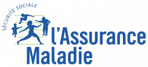
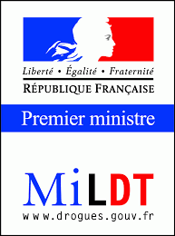
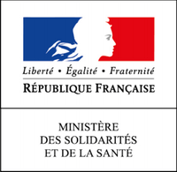
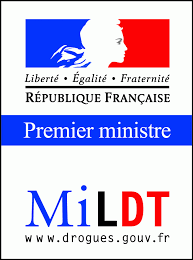
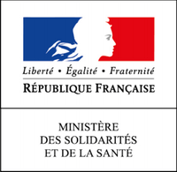

ALCOOL ECOUTE F.N.J.S. – Reconnue d’Utilité Publique –
Groupement d’Associations d’Aide aux Personnes en Difficulté avec l’Alcool
Mouvement de Jeunesse et d’Education Populaire
Agrément National Ministère de la Santé –
SIEGE SOCIAL – 3 Impasse des Alouettes – 86190 AYRON

 


